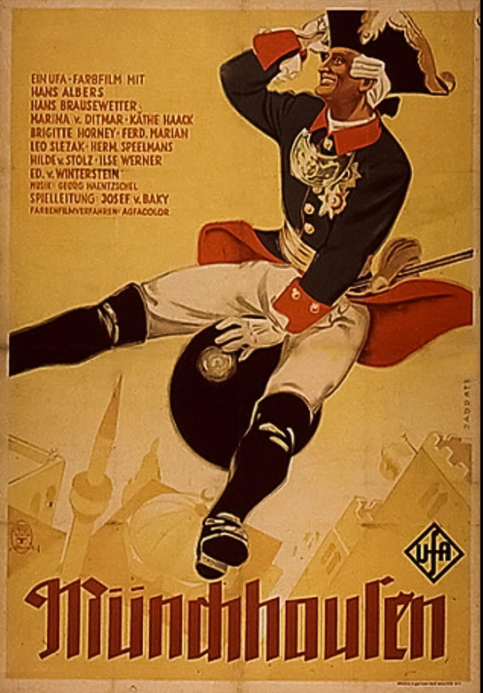

Josef von Báky
1943
130 minutes
This is not the 1988 Terry Gilliam film, but rather the Nazi-era 1943 German film, commissioned by Josef Goebbels, which provides rather unsettling proof that even the Nazis had a sense of humor. Hitler was a vegetarian (kinda). He had a pet dog. He was just like you and me in many ways, aside from being an otherwise inhuman monster. Maybe in a different era you could have been friends, and maybe he'd be polite enough to keep his noxious opinions to himself while you bantered over liters of strong German beer.
You think fondly back on the Terry Gilliam film, which was your first exposure to Uma Thurman, who played Venus. She was heavily featured in the advertising for the film, standing nude on a shell (with her naughty bits modestly covered by her hands) as portrayed in the famous Botticelli painting. This turned you into auite a junior art appreciator.
Venus' long red hair was featured on the cover of one of your favorite grad school textbooks, Papadimitriou's Computational Complexity. The front cover had just her tangled tresses, and if you flipped the book over you were staring into her dreamy heavy-lidded eyes--which you did quite often when you'd get bored or distracted in class. You'd fantasize about lying on a pillow next to her as she explained P vs NP and the ways in which various complexity classes nested inside each other as you would drift off to sleep.
Time to choose something different: